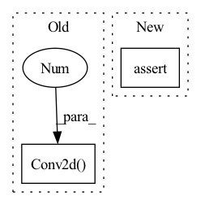

Pattern ID :2331

Before Change
nn.Conv2d(3, 64, 5, stride=2, padding=2), nn.LeakyReLU(0.2)))
self.conv_blocks.append(
nn.Sequential(
nn.Conv2d(64, 128, 5, stride=2, padding=2),
nn.BatchNorm2d(128), nn.LeakyReLU(0.2)))
self.conv_blocks.append(
nn.Sequential(
After Change
default_act_cfg=dict(type="LeakyReLU", negative_slope=0.2),
out_act_cfg=None):
super().__init__()
assert input_scale % output_scale == 0
assert input_scale // output_scale >= 2
self.input_scale = input_scale
In pattern: SUPERPATTERN
Frequency: 3
Non-data size: 2
Instances
Fragment ID: 5747543
Project Name: open-mmlab/mmgeneration
Commit Name: e6233adabc8816f01d309e057be20fae845cdd3c
Time: 2021-04-27
Author: yangyfaker@gmail.com
File Name: mmgen/models/architectures/lsgan/generator_discriminator.py
M Class Name: LSGANDiscriminator
N Class Name: LSGANDiscriminator
M Method Name: __init__(10)
N Method Name: __init__(1)
M Parent Class: nn.Module
N Parent Class: nn.Module
M File Name: mmgen/models/architectures/lsgan/generator_discriminator.py
N File Name: mmgen/models/architectures/lsgan/generator_discriminator.py
M Start Line: 107
M End Line: 125
N Start Line: 220
N End Line: 277
'>
Before Change
hdim = hidden_dim
self.encoder = nn.Sequential(
nn.Conv2d(3, hdim, 4, stride = 2, padding = 1),
nn.ReLU(),
nn.Conv2d(hdim, hdim, 4, stride = 2, padding = 1),
nn.ReLU(),
After Change
super().__init__()
hdim = hidden_dim
assert num_layers >= 1
encoder_layers = []
decoder_layers = []
'>
Fragment ID: 5747540
Project Name: lucidrains/dalle-pytorch
Commit Name: 95a980129346b66ce7cbb3f984b698ca21e0965c
Time: 2021-01-06
Author: nauman.mustafa.x@gmail.com
File Name: dalle_pytorch/dalle_pytorch.py
M Class Name: DiscreteVAE
N Class Name: DiscreteVAE
M Method Name: __init__(5)
N Method Name: __init__(4)
M Parent Class: nn.Module
N Parent Class: nn.Module
M File Name: dalle_pytorch/dalle_pytorch.py
N File Name: dalle_pytorch/dalle_pytorch.py
M Start Line: 82
M End Line: 102
N Start Line: 80
N End Line: 107
'>
Before Change
resnet_block(dim_out + dim_in, dim_out, time_emb_dim = time_dim),
resnet_block(dim_out + dim_in, dim_out, time_emb_dim = time_dim),
LinearAttention(dim_out),
Upsample(dim_out, dim_in) if not is_last else nn.Conv2d(dim_out, dim_in, 3, padding = 1)
]))
default_out_dim = input_channels
self.out_dim = default(out_dim, default_out_dim)
After Change
// downsample factors
downsample_factor = cast_tuple(downsample_factor, len(dim_mults))
assert len(downsample_factor) == len(dim_mults)
// layers
'>
Fragment ID: 5747538
Project Name: lucidrains/denoising-diffusion-pytorch
Commit Name: 54557120880bb9adbea9f93a29a2c432b67991c1
Time: 2023-02-01
Author: lucidrains@gmail.com
File Name: denoising_diffusion_pytorch/simple_diffusion.py
M Class Name: UViT
N Class Name: UViT
M Method Name: __init__(17)
N Method Name: __init__(17)
M Parent Class: nn.Module
N Parent Class: nn.Module
M File Name: denoising_diffusion_pytorch/simple_diffusion.py
N File Name: denoising_diffusion_pytorch/simple_diffusion.py
M Start Line: 295
M End Line: 383
N Start Line: 309
N End Line: 409